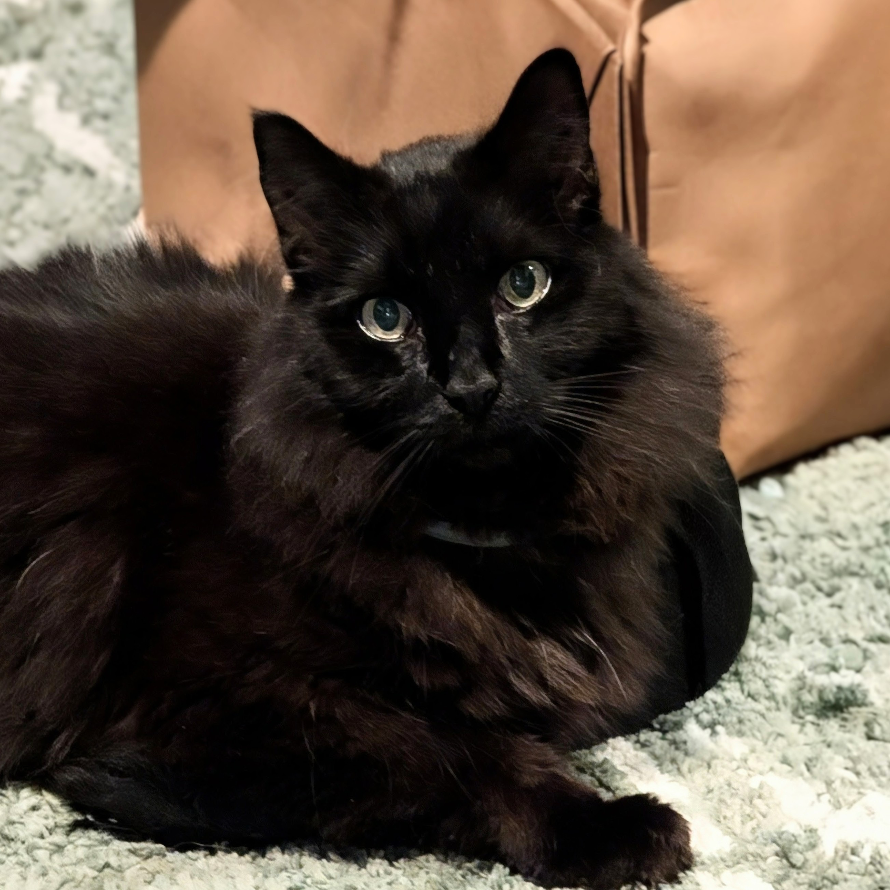

Supporting a senior rescue cat's ongoing work in companionship, porch supervision, and snack quality assurance.
Floyd is a twelve-year-old rescue cat, professional conversationalist, porch supervisor, cuddle enthusiast, and lifelong advocate for snacks.
Born at a shelter, Floyd spent his first year waiting for a home before being adopted. Since then, he has dedicated himself to providing companionship, accepting cuddles, and ensuring that no human meal goes unsupervised.
Over the last eleven years, Floyd has remained a constant friend through life's ups and downs, including multiple moves, multiple homes, and all of life's little changes.
This website is mostly a joke. Floyd, however, is very real.
Floyd's Summer Catnip Budget is currently underfunded. If you'd like to support his ongoing work in naps, snacks, porch supervision, and emotional support services, you can contribute below.
This website is mostly a joke. Floyd, however, is very real.